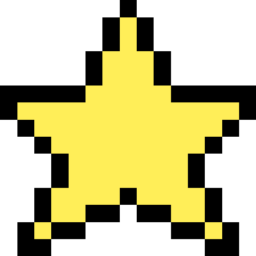

<div class="moon">
    <button class="moon-button"></button>
</div>

<div class="star-night" *ngFor="let resultByLanguage of starResults">
    <!--星を入れるところ-->
    <div *ngFor="let item of resultByLanguage.star">
        <ng-container *ngIf="resultByLanguage.star.length != 0">
            <div [ngSwitch]="resultByLanguage.languageName">
                <div *ngSwitchCase="'JavaScript'">
                    
                </div>
                <div *ngSwitchCase="'Java'">
                    
                </div>
                <div *ngSwitchCase="'Python'">
                    
                </div>
            </div>
        </ng-container>
    </div>
</div>

<footer>
    <button class="home-button" (click)="toSelectLang()">言語選択へ</button>
</footer>
